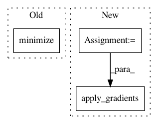

41024c61c0737b1beaea8fff8e00a947d6b6ee9b,knowledge_transfer.py,KnowledgeTransferLearner,build_networks,#KnowledgeTransferLearner#,41
Before Change
loss = -tf.reduce_sum(eligibility)
self.losses.append(loss)
optimizer = tf.train.RMSPropOptimizer(learning_rate=self.config["learning_rate"], decay=0.9, epsilon=1e-9)
self.trainers.append(optimizer.minimize(loss))
init = tf.global_variables_initializer()
After Change
self.variation_probs = [tf.nn.softmax(tf.matmul(L1, tf.matmul(knowledge_base, s))) for s in sparse_representations]
self.optimizer = tf.train.RMSPropOptimizer(learning_rate=self.config["learning_rate"], decay=0.9, epsilon=1e-9)
net_vars = self.shared_vars + sparse_representations
self.accum_grads = create_accumulative_gradients_op(net_vars, 1)
// self.writers = []
self.losses = []
for i, probabilities in enumerate(self.variation_probs):
good_probabilities = tf.reduce_sum(tf.mul(probabilities, tf.one_hot(tf.cast(self.action_taken, tf.int32), self.nA)), reduction_indices=[1])
eligibility = tf.log(good_probabilities) * self.advantage
// eligibility = tf.Print(eligibility, [eligibility], first_n=5)
loss = -tf.reduce_sum(eligibility)
self.losses.append(loss)
// writer = tf.summary.FileWriter(self.monitor_dir + "/task" + str(i), self.sess.graph)
// An add op for every task & its loss
// add_accumulative_gradients_op(net_vars, accum_grads, loss, identifier)
self.add_accum_grads = [add_accumulative_gradients_op(
self.shared_vars + [sparse_representations[i]],
self.accum_grads,
loss,
i)
for i, loss in enumerate(self.losses)]
self.apply_gradients = self.optimizer.apply_gradients(
zip(self.accum_grads, net_vars))
self.reset_accum_grads = reset_accumulative_gradients_op(net_vars, self.accum_grads, 1)
init = tf.global_variables_initializer()
In pattern: SUPERPATTERN
Frequency: 3
Non-data size: 3
Instances
Project Name: arnomoonens/yarll
Commit Name: 41024c61c0737b1beaea8fff8e00a947d6b6ee9b
Time: 2017-02-09
Author: x-006@hotmail.com
File Name: knowledge_transfer.py
Class Name: KnowledgeTransferLearner
Method Name: build_networks
Project Name: p2irc/deepplantphenomics
Commit Name: c4225216a131206747cdf5ca05cb1d4ef6fa3ac9
Time: 2018-05-22
Author: nicoreekohiggs@gmail.com
File Name: deepplantphenomics/deepplantpheno.py
Class Name: DPPModel
Method Name: __assemble_graph
Project Name: HyperGAN/HyperGAN
Commit Name: 9d6d46dd83f16ea0df9e084f970cda1ce9132757
Time: 2016-10-22
Author: martyn@255bits.com
File Name: lib/trainers/slowdown_trainer.py
Class Name:
Method Name: initialize